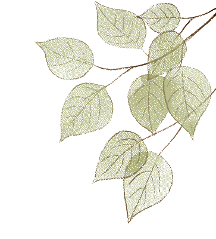
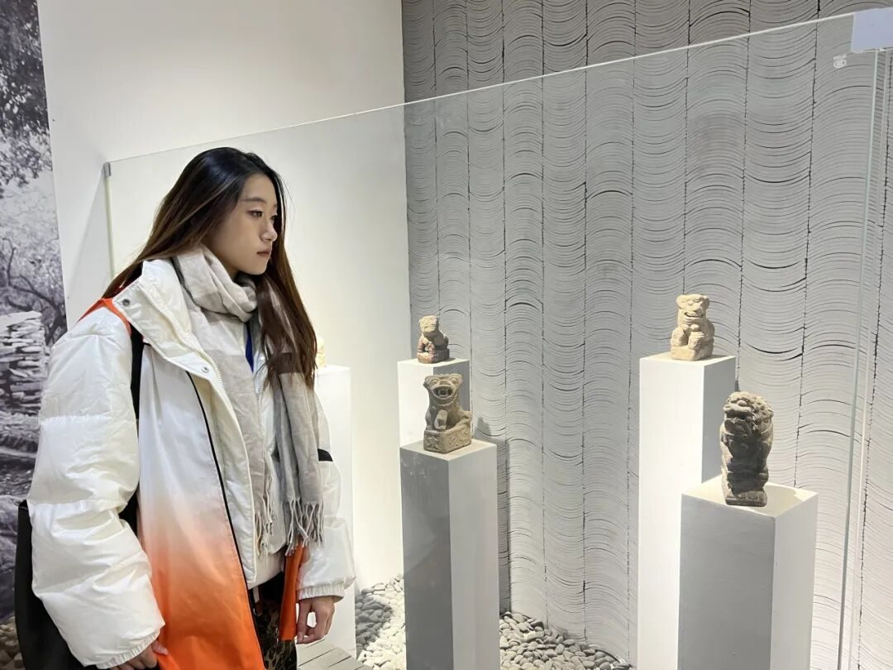
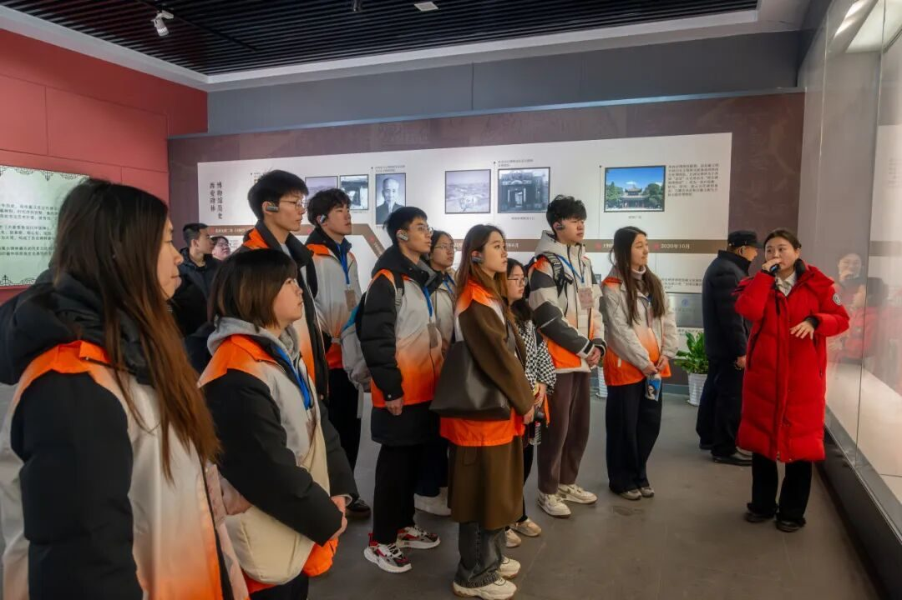
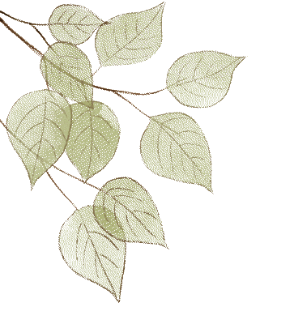
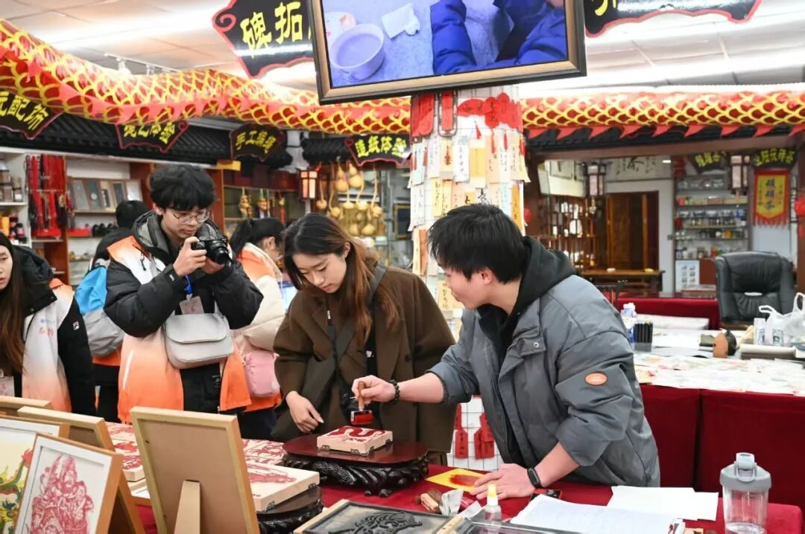
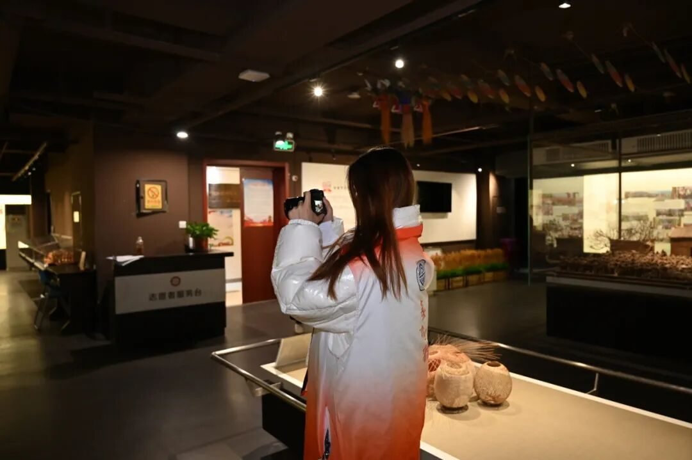
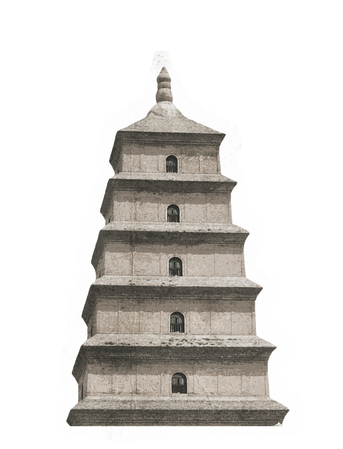
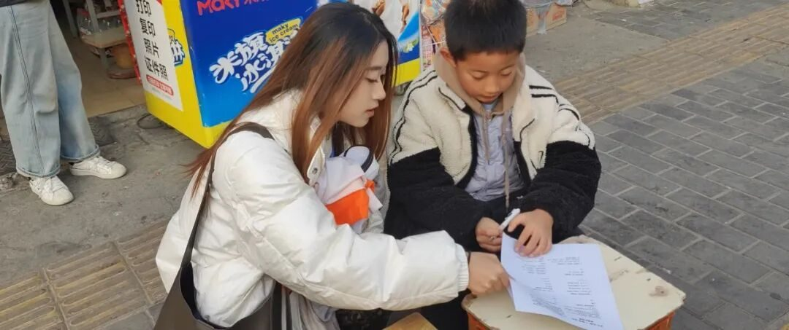

在这五天的非遗探索之旅中，我们穿梭于西安的大街小巷，深入体验了丰富多彩的非遗文化。从碑林博物馆、高家大院的文化熏陶，到非遗博物馆与陈列馆领略各类非遗展品的魅力；从台沟村探寻造纸技艺的传承脉络，再到到何家营鼓乐社聆听千年鼓乐的激昂旋律，以及易俗社感受秦腔的古韵今风，每一处都让我们对非遗文化有了更深刻的认识。



过程中，我们既为非遗的独特魅力所震撼，也因传统技艺在现代社会面临的挑战而担忧。在与民众交流中，我们看到非遗虽受关注，但深入了解程度仍有待提升。



作为大学生，开展非遗调研意义重大。我们肩负着传承与创新的使命，期望通过调研，让更多人了解非遗，为其注入新活力。相信在我们共同努力下，非遗文化定能在新时代绽放更耀眼光芒，绵延不绝，走向世界。
-END-
来源 | 行者无疆实践团
图片 | 行者无疆实践团
文字 | 秦简宜
编辑 | 郑瑞瑄
审核 | 李凌志 杩健辉
责编 | 邹靓靓